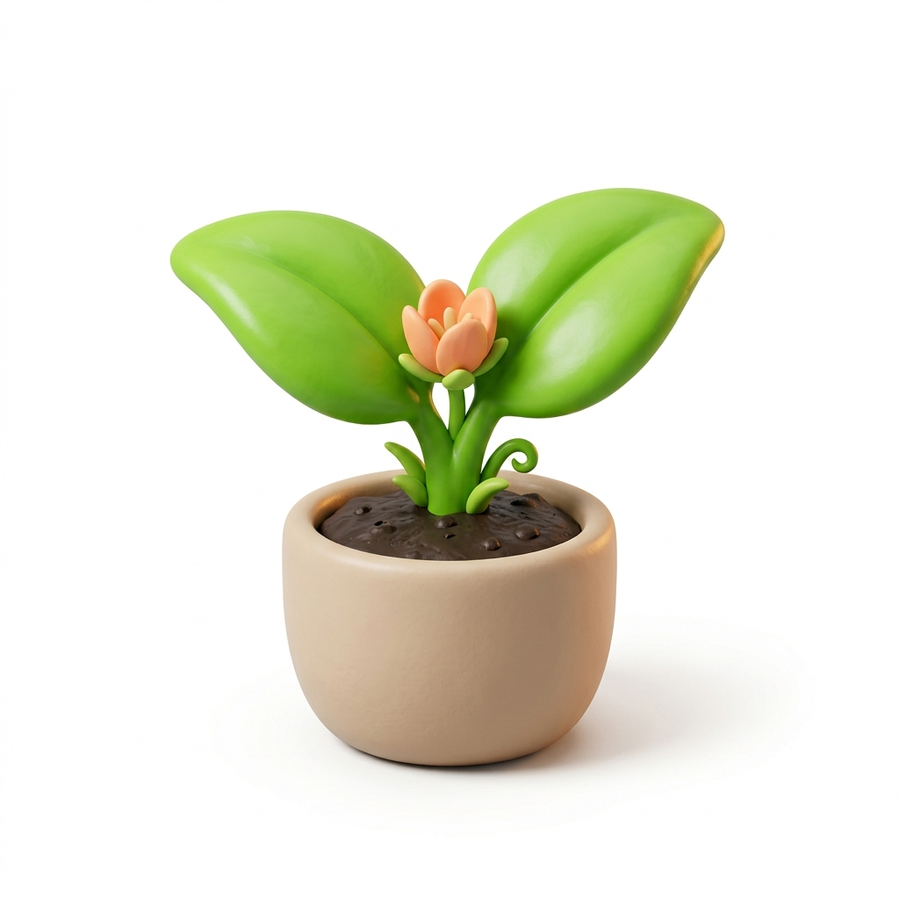

12 – 24 Months
Nestlings
A quiet, tactile sanctuary focused on attachment, sensory discovery, and unhurried motor milestones.
- 1 : 3 caregiver ratio
- Custom nap & feeding rhythms
- Soft natural-wood sensory trays
Ages 1 – 5 · Autumn & Spring Enrollment Open
A sunlit, low-stimulation daycare built around unhurried play, nature-rich outdoor time, and warm educator bonds.
Small groups ensure every child is known deeply, supported calmly, and never rushed.
12 – 24 Months
A quiet, tactile sanctuary focused on attachment, sensory discovery, and unhurried motor milestones.

2 – 3 Years
Language blossoms through songs, mud-kitchen play, storytelling, and early cooperative friendships.
3 – 5 Years
Project-based curiosity blending art studio work, early numeracy, forest walks, and emotional confidence.
Children thrive on predictable, unhurried transitions. Here is how a typical 10-hour day is balanced.
Garden play, sandbox engineering, and neighborhood nature walks.
Clay, watercolors, wooden blocks, rhythm instruments, and story circles.
Cozy cots, soft lullabies, and calm reading corners for recharge.
Family-style organic breakfast, warm lunch, and afternoon fruit.
Weekly guided & child-led emphasis across key early-years domains.
Predictable anchors keep toddlers feeling safe and confident.
Each child is paired with a primary educator who greets them every morning and tracks their comfort and growth.
Our in-house cook prepares nut-free, seasonal vegetarian and whole-grain meals with zero refined sugars.
Birch furniture, soft daylight, and uncluttered shelves help young nervous systems stay settled and focused.
At pick-up, you receive a warm daily summary of meals, naps, favorite moments, and emerging interests.
Tuition covers all organic meals and snacks, cloth diapering or eco-wipes for Nestlings, art studio materials, and daily outdoor gear storage.
Green Meadow is strictly nut-free and sesame-free. Our kitchen accommodates dairy-free, egg-free, halal, and vegetarian plans with individual allergen-safe prep stations.
Yes. Families may enroll for 3-day (Mon–Wed or Wed–Fri) or 5-day schedules. We recommend at least 3 consecutive days so younger children settle comfortably.
We follow a gentle 2-week transition where a parent or caregiver joins for short morning visits before gradually stepping back as your child bonds with their educator.
Morning tours run Tuesday through Thursday at 09:30 so you can experience the calm rhythm of our rooms and meet the teaching team.
Green Meadow Daycare
248 Linden Avenue, Brookside
Open Monday – Friday, 07:30 – 18:00